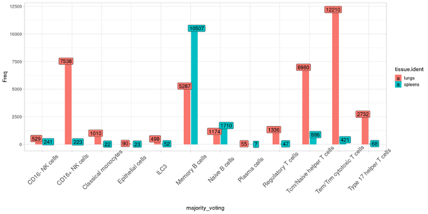
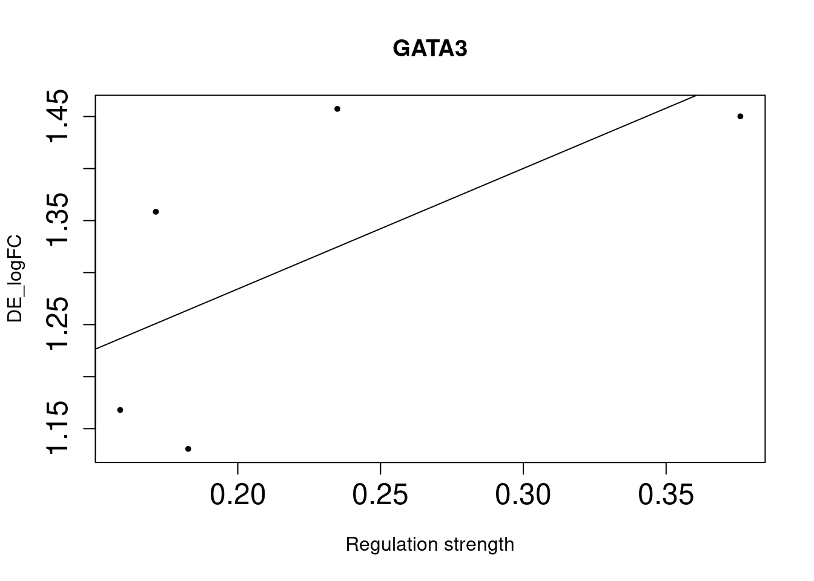
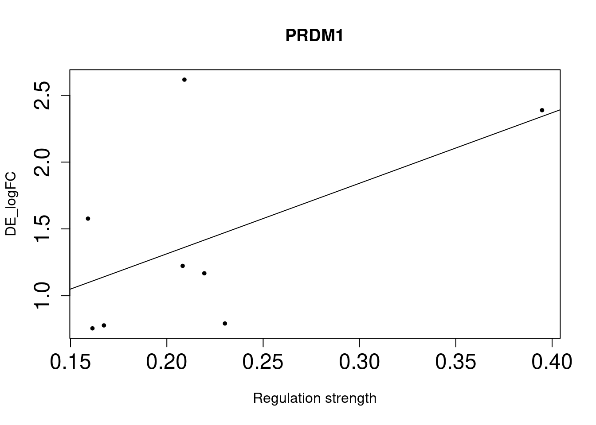
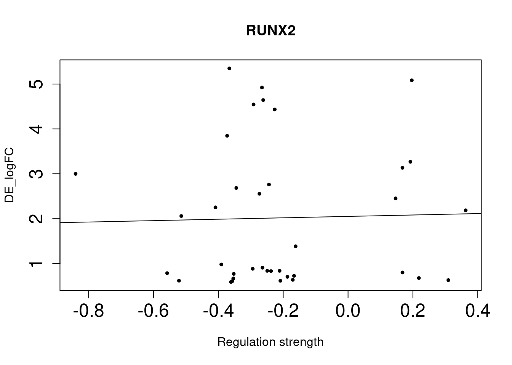

testing TF mediating cross-tissue GE
2025-10-31
Last updated: 2025-11-01
Checks: 7 0
Knit directory: Lung_scMultiomics_paper/
This reproducible R Markdown analysis was created with workflowr (version 1.7.1). The Checks tab describes the reproducibility checks that were applied when the results were created. The Past versions tab lists the development history.
Great! Since the R Markdown file has been committed to the Git repository, you know the exact version of the code that produced these results.
Great job! The global environment was empty. Objects defined in the global environment can affect the analysis in your R Markdown file in unknown ways. For reproduciblity it’s best to always run the code in an empty environment.
The command set.seed(20250512) was run prior to running
the code in the R Markdown file. Setting a seed ensures that any results
that rely on randomness, e.g. subsampling or permutations, are
reproducible.
Great job! Recording the operating system, R version, and package versions is critical for reproducibility.
Nice! There were no cached chunks for this analysis, so you can be confident that you successfully produced the results during this run.
Great job! Using relative paths to the files within your workflowr project makes it easier to run your code on other machines.
Great! You are using Git for version control. Tracking code development and connecting the code version to the results is critical for reproducibility.
The results in this page were generated with repository version 34eefdc. See the Past versions tab to see a history of the changes made to the R Markdown and HTML files.
Note that you need to be careful to ensure that all relevant files for
the analysis have been committed to Git prior to generating the results
(you can use wflow_publish or
wflow_git_commit). workflowr only checks the R Markdown
file, but you know if there are other scripts or data files that it
depends on. Below is the status of the Git repository when the results
were generated:
Untracked files:
Untracked: .RData
Untracked: ArchRLogs/
Untracked: AvgHiC_ABC_three_celltypes.RDS
Untracked: Figure1.pdf
Untracked: Lung_scMultiomics_paper.Rproj
Untracked: _workflowr.yml
Untracked: analysis/.ipynb_checkpoints/
Untracked: analysis/ArchRLogs/
Untracked: analysis/Figure4.R
Untracked: analysis/Figure6.R
Untracked: analysis/Plots/
Untracked: analysis/Rplots.pdf
Untracked: analysis/TF_GRN_analysis.Rmd
Untracked: analysis/TF_GRN_analysis_cross_tissue.Rmd
Untracked: analysis/TF_GRN_analysis_old.Rmd
Untracked: analysis/about.knit.md
Untracked: analysis/archive.Rmd
Untracked: analysis/dictys/
Untracked: analysis/figures_for_grant_application.Rmd
Untracked: analysis/finalize_p2g_analysis.Rmd
Untracked: analysis/finalize_p2g_analysis_30CREs.Rmd
Untracked: analysis/finalize_p2g_analysis_50CREs.Rmd
Untracked: analysis/gene.Rmd
Untracked: analysis/gene_regulatory_network_analysis.Rmd
Untracked: analysis/glmpca.Rmd
Untracked: analysis/identify_lung_specific_epigenetic_features.Rmd
Untracked: analysis/link_peaks_to_genes.Rmd
Untracked: analysis/link_peaks_to_genes_filtered.Rmd
Untracked: analysis/link_peaks_to_genes_wilcoxon.Rmd
Untracked: analysis/make_figure_panels.Rmd
Untracked: analysis/make_figures.Rmd
Untracked: analysis/make_locus_plots.Rmd
Untracked: analysis/peak_to_gene_analyses.Rmd
Untracked: analysis/peak_to_gene_analyses_50CREs.Rmd
Untracked: analysis/preprocess_scRNA_seq_data.ipynb
Untracked: analysis/publication/
Untracked: analysis/run_dimension_reduction_glmPCA.ipynb
Untracked: analysis/run_peak2gene_linkage.Rmd
Untracked: analysis/summarize_candidate_genes.Rmd
Untracked: analysis/summarize_candidate_genes.nb.html
Untracked: code/compare_tau_star_calculations.R
Untracked: code/identify_asthma_CREs.R
Untracked: code/identify_marker_peaks_edgeR.R
Untracked: code/make_plots.R
Untracked: code/plot_heatmap_asthma_CREs.R
Untracked: code/preprocess/
Untracked: code/run_GO_enrichment.R
Untracked: code/run_GO_enrichment_GRN.R
Untracked: code/run_archR_p2g_analyses.R
Untracked: code/track_plots_mapgen.R
Untracked: code/utility_function.R
Untracked: code/utils_mapgen.R
Untracked: data/AvgHiC_ABC_B_ENCODE.RDS
Untracked: data/AvgHiC_ABC_CD4_T_Corces2016.RDS
Untracked: data/AvgHiC_ABC_CD4_T_Corces2016.txt
Untracked: data/AvgHiC_ABC_CD8_T_Corces2016.RDS
Untracked: data/SCENIC_plus_TF_gene.csv
Untracked: data/aoa_ePIPs.txt
Untracked: data/aoa_gene_scores.txt
Untracked: data/asthma_GWAS_snps_hg38.RDS
Untracked: data/asthma_combined_fine_mapping_gwas_L5.rds
Untracked: data/asthma_related_CREs_combined.RDS
Untracked: data/asthma_related_CREs_combined_all_p2g_links.RDS
Untracked: data/asthma_related_CREs_combined_all_p2g_long_tbl.RDS
Untracked: data/asthma_related_CREs_combined_all_p2g_long_tbl.tsv
Untracked: data/asthma_related_CREs_combined_heatmap.RDS
Untracked: data/asthma_related_CREs_combined_heatmap_order.RDS
Untracked: data/asthma_related_CREs_combined_p2g_full.RDS
Untracked: data/asthma_related_CREs_combined_p2g_max.RDS
Untracked: data/asthma_related_CREs_full.RDS
Untracked: data/asthma_related_CREs_heatmap.RDS
Untracked: data/asthma_related_CREs_high_ePIPs.RDS
Untracked: data/asthma_related_CREs_high_ePIPs_p2g_full.RDS
Untracked: data/asthma_related_CREs_p2g.RDS
Untracked: data/asthma_related_CREs_strong_links.RDS
Untracked: data/asthma_risk_genes_two_studies.txt
Untracked: data/coa_ePIPs.txt
Untracked: data/coa_gene_scores.txt
Untracked: data/color_codes.RDS
Untracked: data/comparing_min_pct_GO.RData
Untracked: data/lung_RNA_CPM_by_CellType.RDS
Untracked: data/p2g_res/
Untracked: data/p2g_v3/
Untracked: data/pseudobulk_rna_CPM.RDS
Untracked: data/sample_covariates.txt
Untracked: data/scE2G_gene_list.txt
Untracked: data/scE2G_signif_links.RDS
Untracked: data/u19_full_atac_cell_metadata.RDS
Untracked: data/u19_full_atac_cell_metadata_with_sampleID.RDS
Untracked: keep_keys.cfg
Untracked: output/BActivationTF_targets_L_MemB.txt
Untracked: output/CD4_T_spleen_bulk_DEG.txt
Untracked: output/CD8_T_spleen_bulk_DEG.txt
Untracked: output/CD9_T_spleen_bulk_DEG.txt
Untracked: output/CEBPD_targets_L_MemB.txt
Untracked: output/CXXC1_targets_CD4_T.txt
Untracked: output/Differential_accessibility_by_celltype.xlsx
Untracked: output/Differential_accessibility_cross_tissue.xlsx
Untracked: output/Differential_expression_cross_tissue.xlsx
Untracked: output/E2F4_targets_L_MemB.txt
Untracked: output/E2G_links_vs_ethan_scores.RDS
Untracked: output/E2G_target_genes_asthma_CREs.txt
Untracked: output/EGR2_ALL_L_MemB.txt
Untracked: output/EGR2_SOX5_RUNX1_L_MemB.txt
Untracked: output/EGR2_targets_L_MemB.txt
Untracked: output/ELK1_targets_L_MemB.txt
Untracked: output/ELK4_targets_CD4_T.txt
Untracked: output/Figure1.pdf
Untracked: output/Figure1_double.pdf
Untracked: output/Figure4_double.pdf
Untracked: output/GATA3_targets_L_MemB.txt
Untracked: output/Gene_set_enrichment_lung_upregulated_genes.xlsx
Untracked: output/Gene_set_enrichment_spleen_upregulated_genes.xlsx
Untracked: output/IRF8_targets_Th17.txt
Untracked: output/JUN_targets_Th17.txt
Untracked: output/MAF_targets_Th17.txt
Untracked: output/MAZ_targets_L_MemB.txt
Untracked: output/MEF2B_targets_L_MemB.txt
Untracked: output/MemB_cross_tissue_bulk_DEG.txt
Untracked: output/NaiveB_cross_tissue_bulk_DEG.txt
Untracked: output/Plot-UMAP-Discrepant_Genes-P2GLinks-GeneIntegrationScores.pdf
Untracked: output/Plot-UMAP-Discrepant_Genes-P2GLinks-GeneScores.pdf
Untracked: output/Plot-UMAP-E2G-GeneIntegration.pdf
Untracked: output/Plot-UMAP-E2G-GeneScores.pdf
Untracked: output/SP2_targets_CD4_T.txt
Untracked: output/TBP_targets_L_MemB.txt
Untracked: output/TF_postivie_regulators_L_MemB_DE.txt
Untracked: output/THAP1_targets_L_MemB.txt
Untracked: output/ZBTB6_ALL_L_MemB.txt
Untracked: output/all_targets_L_CD4_T_GRN.txt
Untracked: output/all_targets_L_GRN.txt
Untracked: output/all_targets_L_MemB.txt
Untracked: output/all_targets_L_Th17.txt
Untracked: output/all_targets_L_Th17_GRN.txt
Untracked: output/archR_all_genes_tested.RDS
Untracked: output/asthma_CRE_p2g_links_final_list.txt
Untracked: output/asthma_CREs_p2g_combined_tbl.txt
Untracked: output/asthma_CREs_p2g_combined_tbl_ALL.txt
Untracked: output/asthma_CREs_p2g_filtered_heatmap_inputs.RData
Untracked: output/asthma_E2G_linked_genes.txt
Untracked: output/asthma_E2G_linked_genes_full.txt
Untracked: output/asthma_candidate_risk_genes.xlsx
Untracked: output/asthma_candidate_risk_genes_full.xlsx
Untracked: output/co_activation_scE2G_multiome_tbl.txt
Untracked: output/co_activation_table_scE2G.txt
Untracked: output/co_activation_table_scE2G_gene_list.txt
Untracked: output/genomic_tracks.pdf
Untracked: output/genomic_tracks2.pdf
Untracked: output/genomic_tracks_CD4T_specific.pdf
Untracked: output/genomic_tracks_CXCR5_loci.pdf
Untracked: output/genomic_tracks_LRRC32_loci.pdf
Untracked: output/genomic_tracks_RPS25_loci.pdf
Untracked: output/genomic_tracks_not_shared_blood.pdf
Untracked: output/genomic_tracks_selected.pdf
Untracked: output/genomic_tracks_selected_loci.pdf
Untracked: output/genomic_tracks_selected_loci_80K.pdf
Untracked: output/genomic_tracks_selected_loci_scE2G.pdf
Untracked: output/lung_GRN_TFs.csv
Untracked: output/lung_GRN_regulatory_markers.csv
Untracked: output/marker_peaks_cross_tissue_DA.pdf
Untracked: output/marker_peaks_cross_tissue_DA_FOSB.pdf
Untracked: output/marker_peaks_cross_tissue_DA_HSPA1A.pdf
Untracked: output/master_regulators_GO_enrichment.RDS
Untracked: output/master_regulators_sig.RData
Untracked: output/p2g_57_links.txt
Untracked: output/p2g_links_ArchR.txt
Untracked: output/p2g_links_scE2G.txt
Untracked: output/p2g_links_scE2G_mapped_to_archR.txt
Untracked: output/p2g_links_scE2G_scATAC_mapped_to_archR.txt
Untracked: output/p2g_scE2G_scATAC_mapped_to_archR_peakset.txt
Untracked: output/scE2G_all_genes_tested.RDS
Untracked: output/scE2G_genes_vs_prior_genes.RDS
Untracked: output/scE2G_genome_wide_linked_genes.RDS
Untracked: output/smo_expression_markers_ImmuneLow.xlsx
Untracked: output/smo_expression_markers_LungAirWay.xlsx
Untracked: output/u19_multiomics
Untracked: plots/
Untracked: references.bib
Untracked: references_sim.bib
Untracked: simplify_bib.sh
Untracked: tables/
Unstaged changes:
Modified: README.md
Modified: analysis/heritability_enrichment_for_lung_open_chromatin.Rmd
Modified: analysis/identify_cell_types.Rmd
Modified: analysis/identify_lung_specific_transcriptomic_features.Rmd
Modified: analysis/test.Rmd
Note that any generated files, e.g. HTML, png, CSS, etc., are not included in this status report because it is ok for generated content to have uncommitted changes.
These are the previous versions of the repository in which changes were
made to the R Markdown
(analysis/TF_mediated_cross_tissue_DE.Rmd) and HTML
(docs/TF_mediated_cross_tissue_DE.html) files. If you’ve
configured a remote Git repository (see ?wflow_git_remote),
click on the hyperlinks in the table below to view the files as they
were in that past version.
| File | Version | Author | Date | Message |
|---|---|---|---|---|
| Rmd | 34eefdc | Jing Gu | 2025-11-01 | TF regulation to explain cross-tissue DE genes |
| html | 7933e28 | Jing Gu | 2025-11-01 | Build site. |
| Rmd | abc6dc8 | Jing Gu | 2025-11-01 | TF regulation to explain cross-tissue DE genes |
Cross-tissue DE tested in bulk by DESeq2
100-650 cross-tissue DE genes were found across cell types with single-cell approach. About half amount were detected with bulk approach, except for Memory B cells.
CD4-T CD8-T NK Memory-B Naive-B
lung_up 26 17 27 273 24
spleen_up 41 46 38 281 1Top 10 lung-upregulated genes in each cell type
Spleen-upregulated genes were strictly enriched in B cell functions
Somehow spleen-upregulated genes in T cells are enriched for B cell activation.

| Version | Author | Date |
|---|---|---|
| 7933e28 | Jing Gu | 2025-11-01 |
In summary, genes with higher expression in lungs are broadly enriched for T cell related functions, while those in spleens are broadly enriched for B cell related functions. We still see lung up-regulated genes enriched in pathways of heat-shock protein genes. Overall, the GO enrichment results are consistent between bulk or single-cell approach.
Testing whether TFs mediate cross-tissue GE differences
We have shown that chromatin accessibility for cross-tissue DE genes are very similar. Thus, some other mechanisms may drive the differences, which motivates us to test whether TF activity is responsible for the up-regulation of genes in lung.
Cell composition for both tissues 
We examined GRNs for B cells because both tissues have relatively similar number of cells. Though half amount of memory B cells found in lung compared to spleen, we still detected several lung TFs with higher activity relative to spleen. The differences in naive B cells are small, which is consistent with lack of differences in cross-tissue DE genes in naive B cells.
[[1]]
| Version | Author | Date |
|---|---|---|
| 7933e28 | Jing Gu | 2025-11-01 |
[[2]]
| Version | Author | Date |
|---|---|---|
| 7933e28 | Jing Gu | 2025-11-01 |
Let’s focus on TFs specific to lung memory B cells and ask whether they explain up-regulated genes in lungs
Testing whether lung-specific TFs regulated more DE genes
Here I performed the tests on DE genes identified using single-cell or bulk approach. I identified lung-specific TFs by only requiring its expression to be 1.5 fold higher in lung than spleen. I relaxed the differential regulation criteria because the quantity of target counts do not truly reflect the difference.
[1] "Results for single-cell approach DE genes:" p_value odds_ratio conf_low conf_high FDR
CEBPD 1.3e-03 1.69 1.23 2.29 0.02643333
IRF1 8e-04 1.79 1.26 2.50 0.02643333
RUNX2 1.2e-03 1.88 1.27 2.72 0.02643333[1] "Results for bulk approach DE genes:" p_value odds_ratio conf_low conf_high FDR
GATA3 2e-02 3.41 1.07 8.41 0.24400000
PRDM1 3.4e-03 3.48 1.45 7.23 0.06913333Examining the effect sizes between TF regulation and differential expression
As we identified lung-specific TFs enriched for DE genes, we further asked if TFs that have stronger links tend to have DE genes with larger differences between lung and spleen. Let’s use gene expression in spleen as baseline. If specific lung TFs drive gene expression in lung to be higher than baseline, we would expect to higher TF activity leads to higher expression.
Method For each lung-specific TF, we identified lung up-regulated genes in its network. Then we plotted TF strength and differential expression and showed the fitted line.
Bulk DE genes

| Version | Author | Date |
|---|---|---|
| 7933e28 | Jing Gu | 2025-11-01 |

| Version | Author | Date |
|---|---|---|
| 7933e28 | Jing Gu | 2025-11-01 |
[[1]]
NULL
[[2]]
NULLSingle-cell DE genes

| Version | Author | Date |
|---|---|---|
| 7933e28 | Jing Gu | 2025-11-01 |

| Version | Author | Date |
|---|---|---|
| 7933e28 | Jing Gu | 2025-11-01 |

| Version | Author | Date |
|---|---|---|
| 7933e28 | Jing Gu | 2025-11-01 |
[[1]]
NULL
[[2]]
NULL
[[3]]
NULLWe saw positive trends for the two TFs enriched for bulk-level DE genes, but much weaker trend for the three TFs enriched for single-cell level DE genes.
R version 4.2.0 (2022-04-22)
Platform: x86_64-pc-linux-gnu (64-bit)
Running under: CentOS Linux 7 (Core)
Matrix products: default
BLAS/LAPACK: /software/openblas-0.3.13-el7-x86_64/lib/libopenblas_haswellp-r0.3.13.so
locale:
[1] LC_CTYPE=en_US.UTF-8 LC_NUMERIC=C LC_TIME=C
[4] LC_COLLATE=C LC_MONETARY=C LC_MESSAGES=C
[7] LC_PAPER=C LC_NAME=C LC_ADDRESS=C
[10] LC_TELEPHONE=C LC_MEASUREMENT=C LC_IDENTIFICATION=C
attached base packages:
[1] stats graphics grDevices utils datasets methods base
other attached packages:
[1] ggrepel_0.9.6 scales_1.4.0 data.table_1.17.4 ggplot2_3.5.2
[5] tidyr_1.3.1 dplyr_1.1.4
loaded via a namespace (and not attached):
[1] Rcpp_1.0.14 RColorBrewer_1.1-3 pillar_1.10.2 bslib_0.9.0
[5] compiler_4.2.0 later_1.4.2 jquerylib_0.1.4 git2r_0.33.0
[9] workflowr_1.7.1 tools_4.2.0 digest_0.6.37 gtable_0.3.6
[13] jsonlite_2.0.0 evaluate_1.0.3 lifecycle_1.0.4 tibble_3.2.1
[17] pkgconfig_2.0.3 rlang_1.1.6 cli_3.6.5 rstudioapi_0.17.1
[21] crosstalk_1.2.1 yaml_2.3.10 xfun_0.52 fastmap_1.2.0
[25] withr_3.0.2 stringr_1.5.1 knitr_1.50 htmlwidgets_1.6.4
[29] generics_0.1.4 fs_1.6.6 vctrs_0.6.5 sass_0.4.10
[33] DT_0.33 grid_4.2.0 rprojroot_2.0.4 tidyselect_1.2.1
[37] glue_1.8.0 R6_2.6.1 rmarkdown_2.29 farver_2.1.2
[41] purrr_1.0.4 magrittr_2.0.3 whisker_0.4.1 promises_1.3.2
[45] htmltools_0.5.8.1 dichromat_2.0-0.1 httpuv_1.6.16 labeling_0.4.3
[49] stringi_1.8.4 cachem_1.1.0